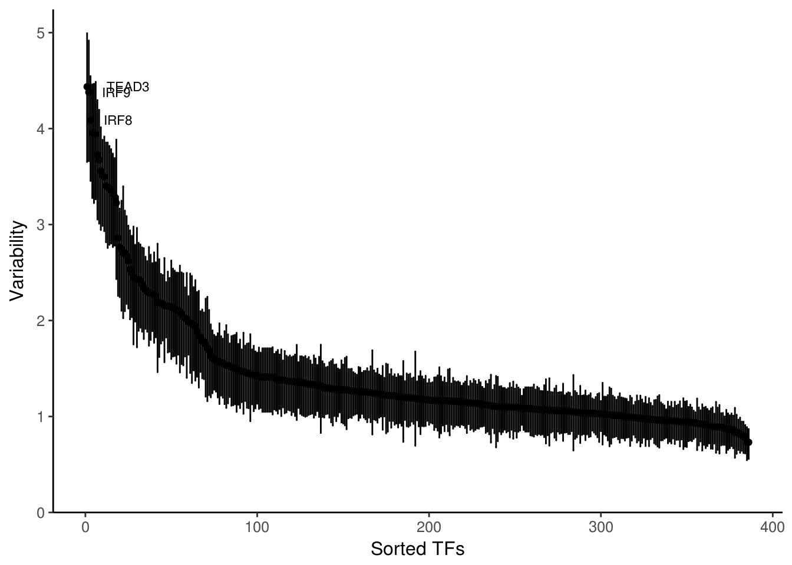
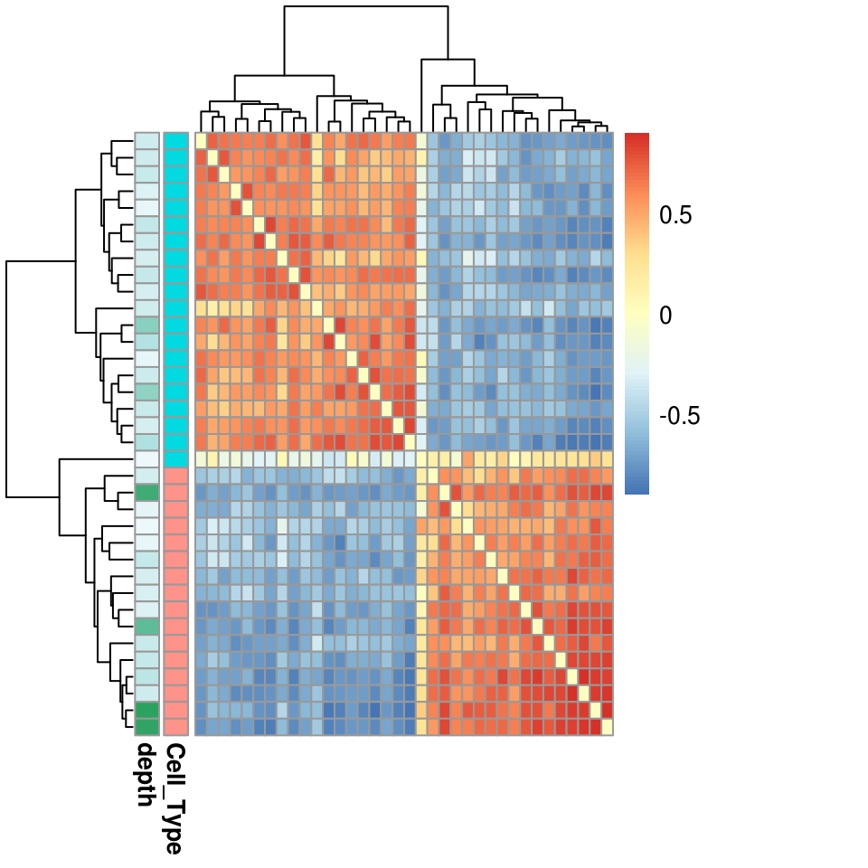
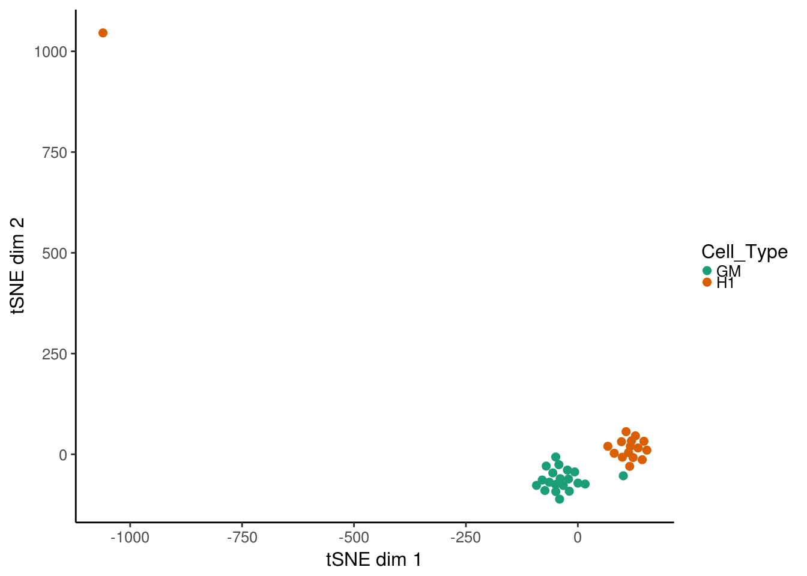
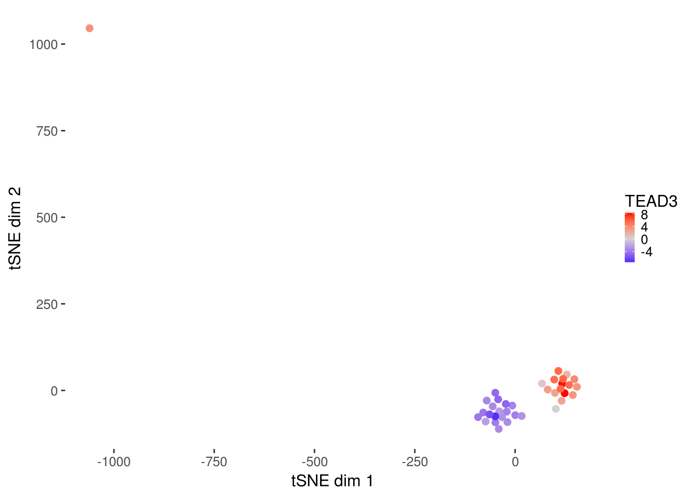
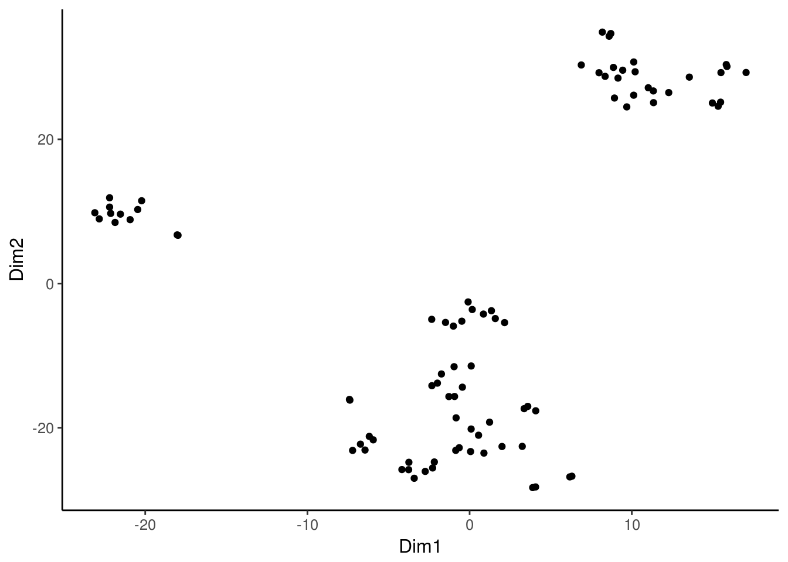
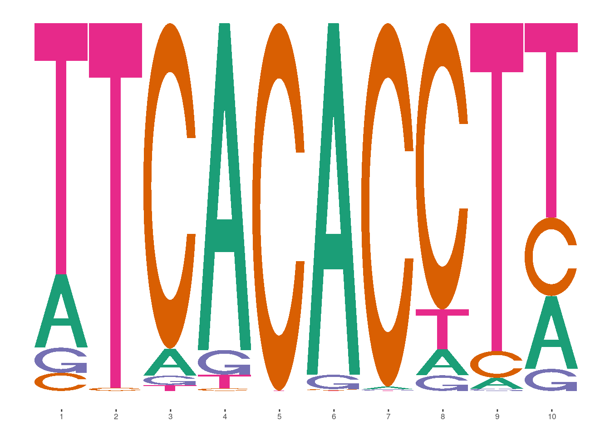
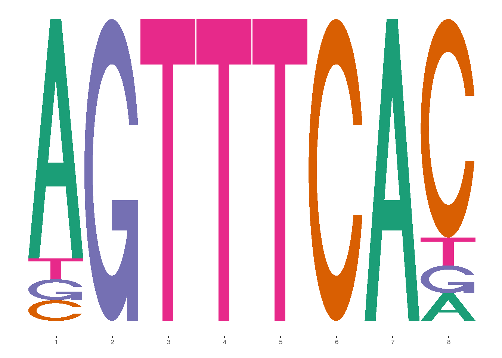

Applications
This vignettes covers some of the various applications of chromVAR’s bias corrected deviations and Z-scores for motifs or other annotations. First, we will compute those deviations:
library(chromVAR)
library(motifmatchr)
library(SummarizedExperiment)
library(Matrix)
library(ggplot2)
library(BiocParallel)
register(MulticoreParam(8))
data(example_counts, package = "chromVAR")
set.seed(2017)
example_counts <- add_gc_bias(example_counts)
counts_filtered <- filter_samples(example_counts, min_depth = 1500, min_in_peaks = 0.15, shiny = FALSE)
counts_filtered <- filter_peaks(counts_filtered)
motifs <- get_jaspar_motifs()
motif_ix <- match_motifs(motifs, counts_filtered)
dev <- compute_deviations(object = counts_filtered,
annotations = motif_ix)Variability
The first application is simply to compute the variability of each motif or annotation across the cells or samples of interest. The function plot_variability
variability <- compute_variability(dev)
plot_variability(variability, use_plotly = FALSE)
Clustering
We can also use the bias corrected deviations to cluster the samples. The function get_sample_correlation first removes highly correlated annotations and low variability annotations and then computes the correlation between the cells for the remaining annotations.
sample_cor <- get_sample_correlation(dev)
library(pheatmap)
pheatmap(as.dist(sample_cor),
annotation_row = colData(dev),
clustering_distance_rows = as.dist(1-sample_cor),
clustering_distance_cols = as.dist(1-sample_cor))
Cell / sample similarity
We can also use tSNE for looking at cell similarity. The function deviations_tsne performs tsne and results a data.frame with the results. If running in an interactive session, shiny can be set to TRUE to load up a shiny gadget for exploring parameters. In general, with 100’s of cells a perplexity of around 30-50 might make sense. In this example, we have few cells so we are bounded in how high the perplexity can be set– we will use 10 here.
tsne_results <- deviations_tsne(dev, threshold = 1.5, perplexity = 10, shiny = FALSE)To plot the results, plot_deviations_tsne can be used. If running in an interactive session or an interactive Rmarkdown document, shiny can be set to TRUE to generate a shiny widget. Here we will show static results.
tsne_plots <- plot_deviations_tsne(dev, tsne_results, annotation = "TEAD3",
sample_column = "Cell_Type", shiny = FALSE)
tsne_plots[[1]]
tsne_plots[[2]]
Differential accessibility and variability
The differential_deviations function determines whether there is a significant difference between the bias corrected deviations for a given annotation between different groups. The groups can be specified by giving the column name of a column in the colData of the dev object or a vector of group assignments.
diff_acc <- differential_deviations(dev, "Cell_Type")
head(diff_acc)## p_value p_value_adjusted
## 1 6.667785e-02 1.175006e-01
## 2 1.802723e-02 4.166773e-02
## 3 3.825026e-03 1.077708e-02
## 4 1.562799e-12 6.032403e-11
## 5 5.858065e-01 6.709831e-01
## 6 1.686300e-04 7.396724e-04The differential_variability function determines whether there is a significant difference between the variability of any of the annotations between different groups.
diff_var <- differential_variability(dev, "Cell_Type")
head(diff_var)## p_value p_value_adjusted
## 1 0.4330854 0.9135025
## 2 0.7011659 0.9652404
## 3 0.1308742 0.6512322
## 4 0.4142727 0.9007595
## 5 0.4509686 0.9141348
## 6 0.9073926 0.9652404Motif / kmer similarity
We can also perform tsne for motif similarity rather than cell similarity, by specifying what = "annotations" to the deviations_tsne function.
inv_tsne_results <- deviations_tsne(dev, threshold = 1.5, perplexity = 8,
what = "annotations", shiny = FALSE)
ggplot(inv_tsne_results, aes(x = Dim1, y = Dim2)) + geom_point() +
chromVAR_theme()
Kmers and sequence specificity of variation
By using kmers as the annnotation, we can use the kmers to identify the precise nucleotides necessary for chromatin accessibility variability. The deviations_covariability function returns a normalized covariance between the bias corrected deviations of any pair of annotations. We will use 6mers here in the interest of computational time, but in general 7mers yield higher variability and are better starting points for assembling de novo motifs (see next section).
kmer_ix <- match_kmers(6, counts_filtered)
kmer_dev <- compute_deviations(counts_filtered, kmer_ix)
kmer_cov <- deviations_covariability(kmer_dev)
plot_kmer_mismatch("CATTCC",kmer_cov)
De novo kmer assembly
We can use the assemble_kmers function to build de novo motifs using the kmer deviation results. The function goes iteratively through the most variable kmers and uses the normalized covariance of the bias corrected deviations for closely related kmers to weight each nucleotide in the motif.
de_novos <- assemble_kmers(kmer_dev, progress = FALSE) #no progress bar
de_novos## PWMatrixList of length 23
## names(23): denovo_1 denovo_2 denovo_3 ... denovo_21 denovo_22 denovo_23We can use the pwm_distance function to see how close our de novo motifs match known motifs. pwm_distance returns a list with three matrices- ‘dist’ has the distance between each pair of motifs, ‘strand’ the strand of the motif for the match, and ‘offset’ the offset between the motifs.
dist_to_known <- pwm_distance(de_novos, motifs)
closest_match1 <- which.min(dist_to_known$dist[1,])
dist_to_known$strand[1,closest_match1]## [1] "-"library(ggmotif) # Package on github at AliciaSchep/ggmotif. Can use seqLogo alternatively
library(TFBSTools)
ggmotif_plot(toPWM(reverseComplement(motifs[[closest_match1]]),type = "prob"))
ggmotif_plot(de_novos[[1]])
In this case, it looks like the first five base pairs of the de novo motif match well with the last five of the known motif. To get a better sense of whether these might represent the same motif, one can compute the deviations for the de novo motif and see if they are correlated with the known.
Synergy between motifs
chromVAR includes a function for computing the “synergy” between pairs of annotations/motifs, where synergy is defined as the excess variability of chromatin accessibility for peaks sharing both motifs compared to a random sub-sample of the same size of peaks with one motif (the one with greater variability).
Function for computing synergy
data(example_ix, package = "chromVAR")## Warning in data(example_ix, package = "chromVAR"): data set 'example_ix'
## not foundget_annotation_synergy(counts_filtered, motif_ix[,c(83,24,20)])## MA0139.1_CTCF MA0107.1_RELA MA0140.2_GATA1::TAL1
## MA0139.1_CTCF 0.0000000 -1.187967 0.5278092
## MA0107.1_RELA -1.1879675 0.000000 1.5278019
## MA0140.2_GATA1::TAL1 0.5278092 1.527802 0.0000000The result is a matrix with Z-scores for the variability synergy of each possible pairing. Note that this function is pretty slow and should only be performed with a limited selection of motifs and not the full collection!
Correlation
An extreme synergy score suggests the possibility of cooperative or competitive binding between the factors that bind the motif. However, if the two factors simply tend to be co-expressed or oppositely expressed, then the synergy score could also be extreme. It can thus be helpful to look at the correlation between the deviations for the two motifs, in particular the correlation between the deviations for the peak sets that only have one or only the other motif. There is a function to compute this correlation:
get_annotation_correlation(counts_filtered, motif_ix[,c(83,24,20)])## MA0139.1_CTCF MA0107.1_RELA MA0140.2_GATA1::TAL1
## MA0139.1_CTCF 1.0000000 -0.41909239 -0.28320172
## MA0107.1_RELA -0.4190924 1.00000000 -0.09099004
## MA0140.2_GATA1::TAL1 -0.2832017 -0.09099004 1.00000000Session Info
Sys.Date()## [1] "2017-02-21"sessionInfo()## R version 3.3.1 (2016-06-21)
## Platform: x86_64-pc-linux-gnu (64-bit)
## Running under: Ubuntu 14.04.1 LTS
##
## locale:
## [1] LC_CTYPE=en_US.UTF-8 LC_NUMERIC=C
## [3] LC_TIME=en_US.UTF-8 LC_COLLATE=en_US.UTF-8
## [5] LC_MONETARY=en_US.UTF-8 LC_MESSAGES=en_US.UTF-8
## [7] LC_PAPER=en_US.UTF-8 LC_NAME=C
## [9] LC_ADDRESS=C LC_TELEPHONE=C
## [11] LC_MEASUREMENT=en_US.UTF-8 LC_IDENTIFICATION=C
##
## attached base packages:
## [1] parallel stats4 stats graphics grDevices utils datasets
## [8] methods base
##
## other attached packages:
## [1] ggmotif_0.0.0 chromVAR_0.4.3
## [3] pheatmap_1.0.8 ggplot2_2.2.1
## [5] BiocParallel_1.8.1 Matrix_1.2-7.1
## [7] TFBSTools_1.12.1 shiny_1.0.0
## [9] SummarizedExperiment_1.4.0 Biobase_2.34.0
## [11] GenomicRanges_1.26.2 GenomeInfoDb_1.10.3
## [13] IRanges_2.8.1 S4Vectors_0.12.1
## [15] BiocGenerics_0.20.0 motifmatchr_0.1.0
##
## loaded via a namespace (and not attached):
## [1] bitops_1.0-6 DirichletMultinomial_1.16.0
## [3] devtools_1.12.0.9000 RColorBrewer_1.1-2
## [5] httr_1.2.1 rprojroot_1.2
## [7] highlight_0.4.7 backports_1.0.5
## [9] tools_3.3.1 R6_2.2.0
## [11] DT_0.2 seqLogo_1.40.0
## [13] DBI_0.5-1 lazyeval_0.2.0
## [15] colorspace_1.3-2 withr_1.0.2
## [17] curl_2.3 git2r_0.18.0
## [19] xml2_1.1.1 desc_1.1.0
## [21] plotly_4.5.6 labeling_0.3
## [23] rtracklayer_1.34.1 caTools_1.17.1
## [25] scales_0.4.1 readr_1.0.0
## [27] callr_1.0.0.9000 pkgdown_0.1.0.9000
## [29] commonmark_1.1 nabor_0.4.6
## [31] stringr_1.1.0 digest_0.6.12.1
## [33] Rsamtools_1.26.1 rmarkdown_1.3
## [35] R.utils_2.5.0 BSgenome.Hsapiens.UCSC.hg19_1.4.0
## [37] XVector_0.14.0 base64enc_0.1-3
## [39] htmltools_0.3.5 BSgenome_1.42.0
## [41] htmlwidgets_0.8 RSQLite_1.1-2
## [43] VGAM_1.0-3 BiocInstaller_1.24.0
## [45] jsonlite_1.2 gtools_3.5.0
## [47] dplyr_0.5.0 R.oo_1.21.0
## [49] RCurl_1.95-4.8 magrittr_1.5
## [51] GO.db_3.4.0 Rcpp_0.12.9
## [53] munsell_0.4.3 R.methodsS3_1.7.1
## [55] whisker_0.3-2 yaml_2.1.14
## [57] stringi_1.1.2 zlibbioc_1.20.0
## [59] Rtsne_0.11 pkgbuild_0.0.0.9000
## [61] plyr_1.8.4 grid_3.3.1
## [63] crayon_1.3.2 miniUI_0.1.1
## [65] CNEr_1.10.1 lattice_0.20-34
## [67] Biostrings_2.42.1 splines_3.3.1
## [69] annotate_1.52.1 KEGGREST_1.14.0
## [71] knitr_1.15.1 JASPAR2016_1.2.0
## [73] codetools_0.2-15 reshape2_1.4.2
## [75] pkgload_0.0.0.9000 TFMPvalue_0.0.6
## [77] XML_3.98-1.5 evaluate_0.10
## [79] RcppArmadillo_0.7.700.0.0 png_0.1-7
## [81] httpuv_1.3.3 testthat_1.0.2
## [83] gtable_0.2.0 poweRlaw_0.70.0
## [85] purrr_0.2.2 tidyr_0.6.1
## [87] assertthat_0.1 mime_0.5
## [89] xtable_1.8-2 roxygen2_6.0.1
## [91] viridisLite_0.1.3 tibble_1.2
## [93] GenomicAlignments_1.10.0 AnnotationDbi_1.36.2
## [95] memoise_1.0.0